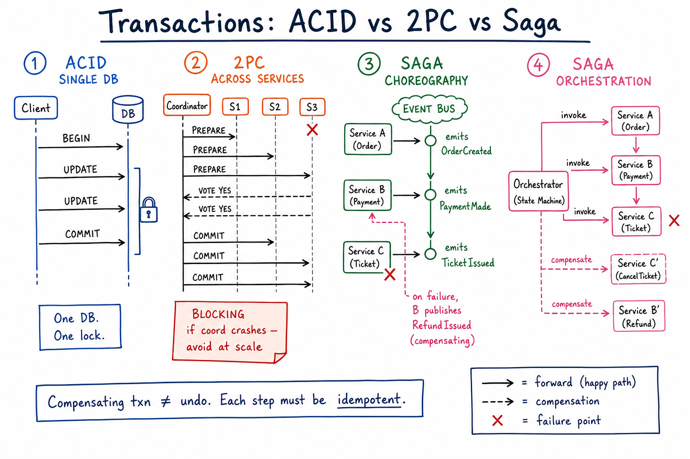

Transactions & Sagas // Concept
Multi-step operations across services must succeed all-or-nothing. ACID solves this within one DB. Across services, 2PC fails at scale — sagas with compensating transactions are the modern answer.

Four sequence diagrams side-by-side: ACID on a single DB, 2PC across services (blocking failure mode), saga choreography (event-driven), saga orchestration (state machine).
01 — What Problem It Solves
BOOKING FLIGHT + HOTEL + CAR: Step 1: reserve flight (Flight Service) Step 2: reserve hotel (Hotel Service) Step 3: charge card (Payment Service) Step 4: issue itinerary (Notification Service) If step 3 fails: must UNRESERVE flight + hotel. If step 4 fails: payment already taken; how to revert? WANT: all-or-nothing semantics across services. PROBLEM: each service has its own DB. No single ACID txn covers them.
The two camps: 2PC (try to extend ACID across services — doesn't scale) vs Saga (give up atomicity, gain eventual consistency via compensating transactions).
01a — Core Vocabulary
| Term | Meaning |
|---|---|
| ACID | Atomicity, Consistency, Isolation, Durability — the single-DB transaction guarantee. |
| 2PC (Two-Phase Commit) | Coordinator asks all participants to PREPARE, then COMMIT. Blocking on coordinator crash. |
| XA | The 2PC standard for distributed transactions. Almost extinct in modern systems. |
| Saga | Sequence of local transactions. On failure, apply compensating transactions to undo. |
| Compensating transaction | An operation that semantically undoes a previous step. NOT a rollback — new business event. |
| Choreography | Each service listens to events and emits the next. No central coordinator. |
| Orchestration | A central state machine calls services in order, handles failures. |
| Outbox pattern | Write event to an outbox table in the same DB txn as the data change. Publisher tails the table. |
| Eventual consistency | System will converge to a consistent state — eventually. |
| Idempotent step | Each saga step can be safely retried. See idempotency. |
02 — Approaches Matrix
| Approach | Atomicity | Latency | Failure Mode | Use When |
|---|---|---|---|---|
| ACID (single DB) | Strong (real) | Lowest | DB rollback on any error | All data fits in one DB |
| 2PC / XA | Strong (claimed) | High (round-trip + locks) | Coordinator crash blocks participants indefinitely | Almost never. Legacy enterprise. |
| Saga — choreography | Eventual | Low | Stuck event → DLQ | Loose coupling; 3-5 steps; clear domain events |
| Saga — orchestration | Eventual | Low | Orchestrator state recovers on restart | Complex flow; many branches; need visibility |
| Workflow engine (Temporal) | Eventual | Low | Engine durably stores state; resumes on crash | You want the orchestrator implemented for you |
03 — Diagram
Main diagram shows all four side-by-side. Note: ACID has one DB and one lock. 2PC has a blocking PREPARE phase with a SPOF coordinator. Choreography is event-driven (no central piece). Orchestration has one explicit state machine.
04 — Why 2PC Fails at Scale
2PC PROTOCOL:
1. Coordinator: "PREPARE" → all participants
2. Each participant: locks rows, writes prepare log, replies "YES" or "NO"
3. If all YES: coordinator writes "COMMIT" → participants commit
4. If any NO / timeout: coordinator writes "ABORT" → participants abort
FAILURE MODES:
(a) BLOCKING: between PREPARE and COMMIT, participants hold locks.
If coordinator crashes here, participants are stuck. Forever.
(b) SPOF: coordinator is a single point of failure.
(c) LATENCY: 2 round trips + fsync at each node.
(d) AVAILABILITY: one slow participant = all locked.
These compose: a slow service in a 2PC chain can stall every other
service that participates with it. Cascading failure.
In a microservices world — 10+ services, frequent deploys, network blips — the probability of 2PC living up to ACID is essentially zero. Use sagas.
05 — Saga: Choreography
Each service publishes events; others react. OrderService PaymentService InventoryService | | | |--OrderCreated-------> | | [pay] | |<--PaymentConfirmed-- | | [reserve] |<-----InventoryReserved-----------------------| | | ALL HAPPY PATH DONE. ON FAILURE (inventory unavailable): InventoryService -> InventoryRejected PaymentService listens -> refund -> PaymentRefunded OrderService listens -> cancel order PROS: - No central piece, fully decoupled. - Each service owns its events. CONS: - Hard to reason about the global flow. - Cyclic event dependencies easy to introduce. - Debugging: "where did the event chain break?" - Versioning events is painful. GOOD FOR: small sagas (3-5 steps), well-defined domains.
06 — Saga: Orchestration
A central Orchestrator (state machine) drives the flow.
OrderOrchestrator state = CREATED
↓ call PaymentService.charge()
on success state = PAID, call InventoryService.reserve()
on failure state = FAILED, no compensation needed yet
on InventoryService.reserve() failure
state = COMPENSATING
call PaymentService.refund()
state = CANCELLED
PROS:
- Single place to read the business flow.
- Easy to add steps, branches, timeouts.
- Observable: orchestrator state = saga state.
- Each step idempotent (retry on transient failure).
CONS:
- Orchestrator can become god-object if not careful.
- Needs durable state store.
GOOD FOR: complex sagas (5+ steps, branching, timeouts).
07 — Compensating Transactions
Key insight: a compensating transaction is NOT a rollback. It's a new business event that semantically reverses the previous one.
| Forward step | Compensating step |
|---|---|
chargeCard(amt) | refundCard(amt) — a new transaction, visible to the user. |
reserveSeat(seatId) | releaseSeat(seatId) |
shipPackage() | recallPackage() — may not be physically possible! Then: "issue store credit". |
sendEmail() | sendApologyEmail() — you can't unsend. |
Compensation is application-level. "Undo" in business terms, not "rewind the DB." Some actions (email sent, drone delivered) are physically irreversible — the saga must account for these.
Every saga step must be idempotent — retries are guaranteed, even compensation can retry. Use idempotency keys per step.
08 — Outbox Pattern (Atomic Write + Publish)
PROBLEM:
payment.charge() {
db.update(payment, status=PAID); // succeeds
kafka.publish("PaymentPaid"); // network blip → FAILS
}
→ DB says paid, no one knows. Saga is stuck.
OUTBOX PATTERN:
BEGIN TXN
db.update(payment, status=PAID)
db.insert(outbox, {topic: "PaymentPaid", payload: {...}, id: UUID})
COMMIT
// separate publisher process
loop:
rows = SELECT * FROM outbox WHERE published_at IS NULL LIMIT 100
for row in rows:
kafka.publish(row.topic, row.payload, row.id) // idempotent w/ id
UPDATE outbox SET published_at = now() WHERE id = row.id
GUARANTEE:
- DB write + outbox row are atomic (same txn).
- Publisher reliably drains the outbox (may publish twice on its own retry; consumer dedupes by id).
- Net effect: at-least-once delivery, exactly-once effect.
ALTERNATIVES:
- CDC (Debezium reads WAL/binlog and publishes to Kafka).
- Listen/Notify on Postgres.
See Kafka deep dive for the transactional producer alternative inside Kafka.
09 — Durable Workflow Engines
For non-trivial sagas, building your own orchestrator is a tarpit. Use a durable workflow engine.
| Engine | Idea | Used by |
|---|---|---|
| Temporal / Cadence | Activities (single steps) + workflow code that's checkpointed at every await. Crash → replay history → resume. | Uber, Stripe (some), Snap, Datadog |
| AWS Step Functions | YAML/JSON state machine; AWS-managed. | AWS users |
| Camunda / Zeebe | BPMN-based workflow. | Enterprise |
| Airflow | DAG-based scheduler. | ETL / data pipelines — not online sagas. |
Temporal-style "workflow as code" is the modern default. You write a saga as a regular function with retries, timeouts, compensations — the engine takes care of durability.
N-2 — Where It Shows Up
- Payment system — classic saga: PaymentIntent → Charge → Webhook, with refunds as compensation.
- Ticketmaster — seat-hold → payment → ticket-issue saga with hold-expiry compensation.
- Job scheduler — durable workflow patterns; retries with backoff.
- Uber trip lifecycle — multi-step saga from request → match → fare → payment.
- Food delivery — order → restaurant → courier → delivery, each step has compensation.
- Idempotency — required for every saga step.
- Concurrency control — sagas don't use locks; they need conflict detection.
- Consistency models — sagas trade strong for eventual.
- Kafka — common event bus + transactional producer.
N-1 — Common Interview Probes
- "What if a saga step fails midway?" → compensate prior steps; each step idempotent.
- "Why not use 2PC?" → blocking, SPOF coordinator, doesn't scale.
- "What if compensation itself fails?" → retry forever (idempotent), or alert + manual resolution.
- "How do you publish events atomically with DB writes?" → outbox pattern.
- "Choreography or orchestration?" → small saga = choreography; complex = orchestration / Temporal.
- "Isolation between concurrent sagas?" → semantic locks (e.g. seat-hold rows), versioned state.
- "What if the event bus is down?" → outbox table piles up; once bus recovers, drain in order.
N — Interview Q&A
Why is 2PC bad?
Blocking: between PREPARE and COMMIT, participants hold locks; if the coordinator crashes, they're stuck. Coordinator is a SPOF. Latency is 2 round trips per commit. One slow participant freezes the whole cohort. Pragmatically: 2PC across 5 microservices each at 99.9% availability → only ~99.5% combined.
What's the difference between rollback and compensation?
Rollback is a DB primitive — "forget the changes I made in this txn." Compensation is a new business action — "issue refund," "release seat." The forward step has already committed and may be visible to users / external systems. Compensation must be designed per step; some actions (sent email) can't be fully undone.
Choreography or orchestration — how do I choose?
≤ 3-4 steps with clear domain events → choreography. > 5 steps, branching, timeouts, retries → orchestration (Temporal or hand-rolled state machine). If you need to visualize the flow for ops, orchestration wins.
What's the outbox pattern in one sentence?
Write the event to an "outbox" table in the same DB transaction as the data change; a separate publisher polls the table and publishes to Kafka. Guarantees the event is sent iff the data was committed.
Why does each saga step need to be idempotent?
Network blips and retries are guaranteed. The orchestrator/event bus may invoke the same step twice. Without idempotency, "chargeCard" runs twice = double-charge. Idempotency key + dedup store, or version-based CAS. See idempotency.
How does Temporal/Cadence make sagas durable?
Workflow code is deterministic; the engine records every event (step started, step completed, sleep started) to a history. On crash, it replays history to rebuild local state, then resumes. "Workflow as code" with crash safety.
Isolation between concurrent sagas?
No global lock — sagas don't have ACID isolation. Use semantic locks: e.g. a seat is held in a "HELD" status row during the saga; concurrent sagas see HELD and reject. Equivalent to optimistic concurrency at the business level.
Compensation failed too. Now what?
Retry forever with backoff — compensation is idempotent. If after N retries it still fails, escalate (DLQ + page on-call). Some compensations are physically impossible (drone delivered package) — the saga must fall back to a different business outcome (store credit).
What guarantees do sagas give vs ACID?
ACID: atomic, consistent, isolated, durable across all steps. Saga: only eventually consistent. Other observers may see intermediate states (seat held but not yet paid). The application must tolerate this — usually by exposing "PENDING" states in the UI.
How do you debug a stuck saga?
Orchestration: query the orchestrator's state store — "saga X stuck at step 3." Choreography: trace events by correlation ID through Kafka/log aggregator. Both: alert on saga age > SLA (e.g. payment saga > 5 min → page). Tools: Temporal Web UI, Jaeger, distributed tracing.
Sagas vs eventual consistency — aren't they the same?
Eventual consistency is the consistency model. Saga is one pattern to achieve a controlled eventual consistency where you explicitly model success/failure flows and compensations. Eventual consistency without sagas = "hope and retry"; with sagas = "designed business workflow."
SDE-2 vs SDE-3 differentiator?
| SDE-2 | SDE-3 |
|---|---|
| Knows ACID; vaguely "use sagas because 2PC bad" | Chooses choreography vs orchestration with reasons; designs each step idempotent + compensation; uses outbox; understands semantic locks; names Temporal; handles compensation-fails-too; reasons about saga isolation and visible intermediate states; tracks saga SLAs |